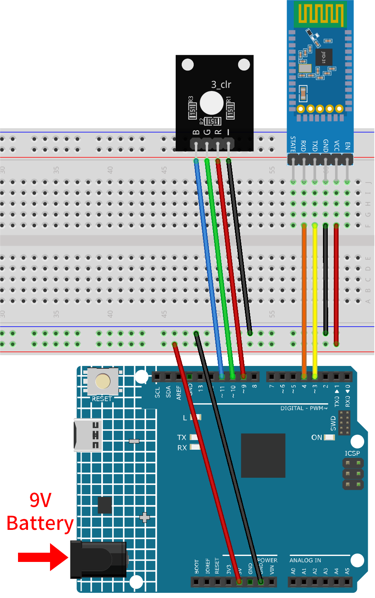
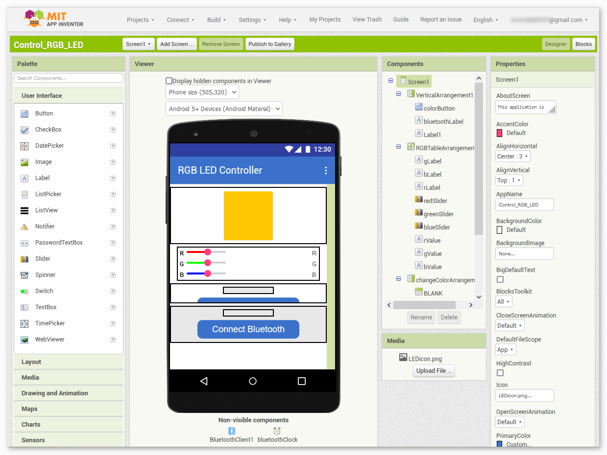
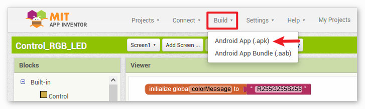
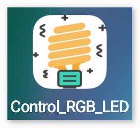
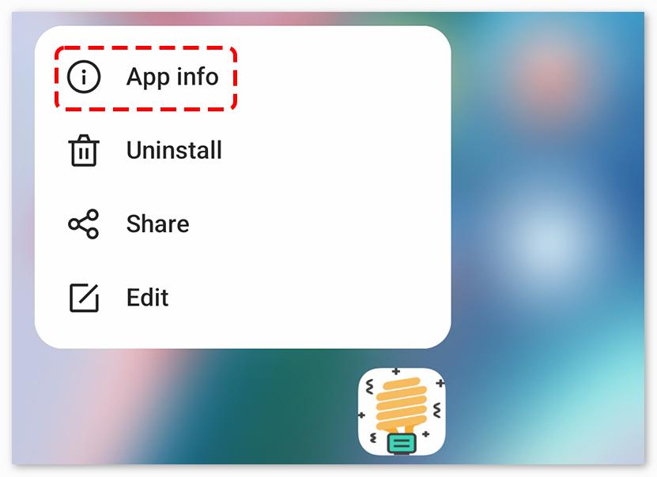
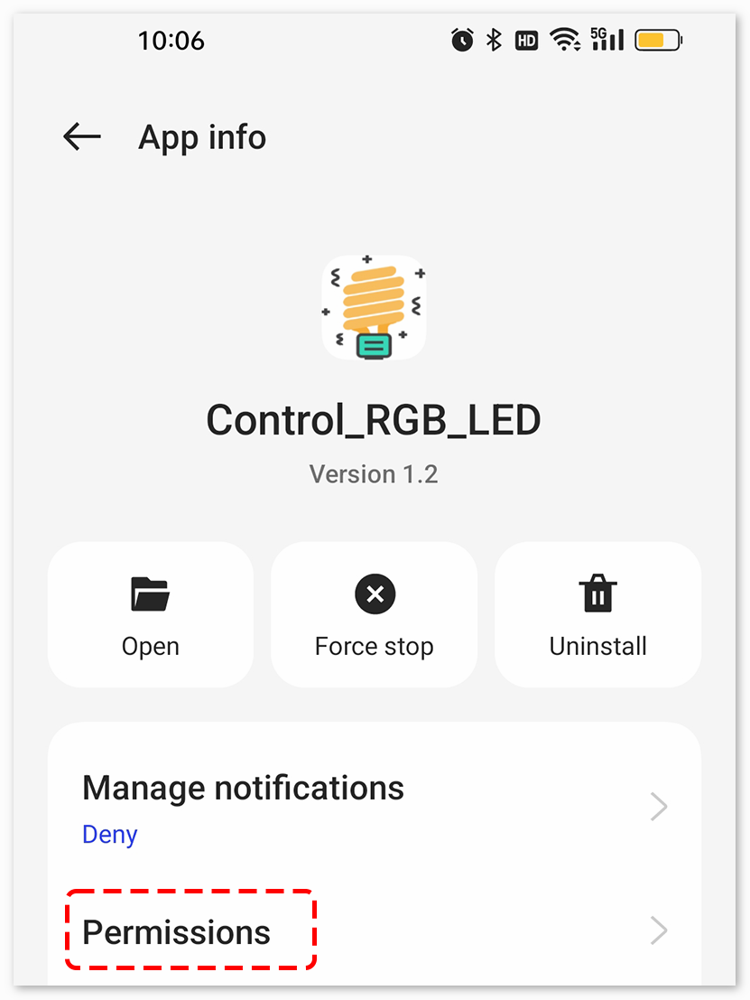
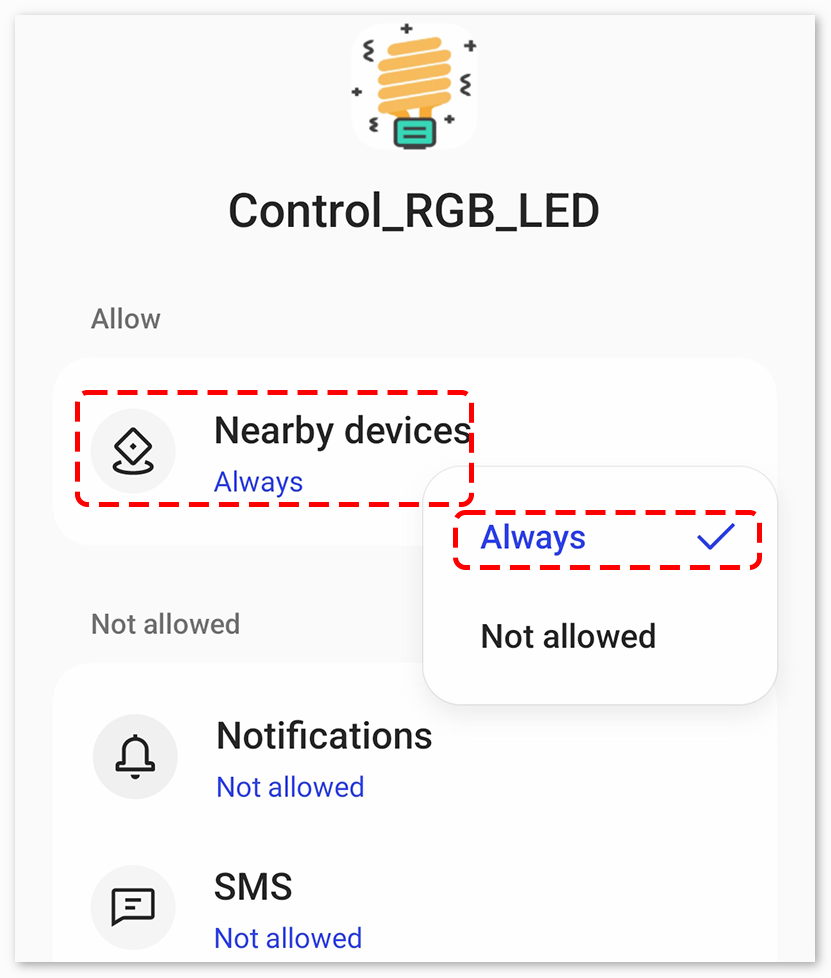
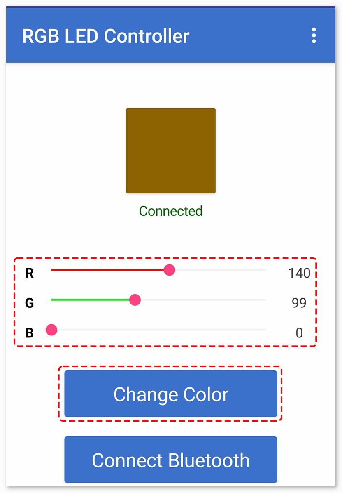

Bemerkung
Hallo und willkommen in der SunFounder Raspberry Pi & Arduino & ESP32 Enthusiasten-Gemeinschaft auf Facebook! Tauchen Sie tiefer ein in die Welt von Raspberry Pi, Arduino und ESP32 mit anderen Enthusiasten.
Warum beitreten?
Expertenunterstützung: Lösen Sie Nachverkaufsprobleme und technische Herausforderungen mit Hilfe unserer Gemeinschaft und unseres Teams.
Lernen & Teilen: Tauschen Sie Tipps und Anleitungen aus, um Ihre Fähigkeiten zu verbessern.
Exklusive Vorschauen: Erhalten Sie frühzeitigen Zugang zu neuen Produktankündigungen und exklusiven Einblicken.
Spezialrabatte: Genießen Sie exklusive Rabatte auf unsere neuesten Produkte.
Festliche Aktionen und Gewinnspiele: Nehmen Sie an Gewinnspielen und Feiertagsaktionen teil.
👉 Sind Sie bereit, mit uns zu erkunden und zu erschaffen? Klicken Sie auf [hier] und treten Sie heute bei!
Bluetooth RGB-Controller
Dieses Projekt ermöglicht die Steuerung einer RGB-LED über eine Android-App mittels Bluetooth-Technologie und einem Smartphone.
Für die Android-Anwendung wird eine kostenfreie, webbasierte Plattform namens MIT App Inventor verwendet. Das Projekt bietet eine hervorragende Gelegenheit, die Schnittstelle zwischen einem Arduino und einem Smartphone kennenzulernen.
Dieses Projekt steuert eine mit einem Arduino Uno verbundene RGB-LED über ein JDY-31 Bluetooth-Modul. Die Android-App sendet verschiedenfarbige Werte an das Arduino Uno-Board via Bluetooth, abhängig von den Benutzereingaben in der grafischen Oberfläche. Das Programm auf dem Uno-Board empfängt RGB-Farbdaten als Zeichen über eine serielle Schnittstelle via Bluetooth und passt die Farbe der LED entsprechend an.
1. Schaltungsaufbau


2. Android-App erstellen
Die Android-Anwendung wird mit einer kostenfreien Web-Anwendung namens MIT App Inventor entwickelt. MIT App Inventor dient als ausgezeichneter Einstiegspunkt in die Android-Entwicklung, dank seiner intuitiven Drag-and-Drop-Funktionen für die Erstellung einfacher Anwendungen.
Beginnen wir nun.
Besuchen Sie Get Started with MIT App Inventor und klicken Sie auf „Online-Tool“ zum Einloggen. Sie benötigen ein Google-Konto, um sich bei MIT App Inventor anzumelden.

Nach dem Einloggen navigieren Sie zu Projects -> Import project (.aia) from my computer. Anschließend laden Sie die Datei
Control_RGB_LED.aiahoch, die im Pfadultimate-sensor-kit\iot_project\bluetooth\04-Bluetooth_RGB_controllerzu finden ist.Sie können sie auch direkt hier herunterladen:
Control_RGB_LED.aia
Nach dem Hochladen der
.aia-Datei erscheint die Anwendung in der MIT App Inventor-Software. Das ist eine vorkonfigurierte Vorlage, die Sie nach dem Vertrautwerden mit MIT App Inventor anpassen können.
Im MIT App Inventor gibt es zwei Hauptbereiche: den Designer und die Blocks. Sie können zwischen diesen beiden Bereichen in der oberen rechten Ecke der Seite wechseln.

Der Designer ermöglicht es Ihnen, Buttons, Textfelder, Bildschirme hinzuzufügen und das gesamte Design Ihrer Anwendung zu modifizieren.

Anschließend gibt es den Bereich Blocks. Hier können Sie spezifische Funktionen für Ihre App programmieren, indem Sie jedes Element in der GUI der App programmieren, um gewünschte Funktionen zu erzielen.

Um die Anwendung auf einem Smartphone zu installieren, navigieren Sie zur Build-Registerkarte.

Sie können eine
.apk-Datei generieren. Nach der Auswahl erscheint eine Seite, auf der Sie zwischen dem Herunterladen einer.apk-Datei oder dem Scannen eines QR-Codes für die Installation wählen können. Folgen Sie der Installationsanleitung, um die Anwendungsinstallation abzuschließen.Sie können auch unsere vorab kompilierte APK hier herunterladen:
Control_RGB_LED.apkFalls Sie die App im Google Play Store oder einem anderen App-Marktplatz veröffentlichen möchten, können Sie eine
.aab-Datei generieren.
3. Code hochladen
Öffnen Sie die Datei
04-Bluetooth_RGB_controller.inoim Pfadultimate-sensor-kit\iot_project\bluetooth\04-Bluetooth_RGB_controller, oder kopieren Sie diesen Code in die Arduino IDE.Nach der Auswahl des korrekten Boards und Ports klicken Sie auf den Hochladen-Button.
Öffnen Sie den Seriellen Monitor (Baudrate auf 9600 einstellen), um Debug-Nachrichten anzuzeigen.
4. Verbindung zwischen App und Bluetooth-Modul herstellen
Stellen Sie sicher, dass die zuvor erstellte Anwendung auf Ihrem Smartphone installiert ist.
Aktivieren Sie zunächst Bluetooth auf Ihrem Smartphone.

Navigieren Sie zu den Bluetooth-Einstellungen auf Ihrem Smartphone und suchen Sie nach Bezeichnungen wie JDY-31-SPP.

Nach dem Anklicken stimmen Sie der Pairing-Anfrage im Popup-Fenster zu. Falls nach einem Pairing-Code gefragt wird, geben Sie „1234“ ein.

Öffnen Sie nun die neu installierte Control_RGB_LED App.

In der App klicken Sie auf Connect Bluetooth, um eine Verbindung zwischen der App und dem Bluetooth-Modul herzustellen.

Diese Seite zeigt eine Liste aller gekoppelten Bluetooth-Geräte. Wählen Sie die Option
xx.xx.xx.xx.xx.xx JDY-31-SPPaus der Liste aus. Der Name jedes Geräts wird neben seiner MAC-Adresse angezeigt.
Wenn auf der oben gezeigten Seite keine Geräte angezeigt werden, könnte dies daran liegen, dass dieser App die Berechtigung fehlt, nach nahegelegenen Geräten zu suchen. In diesem Fall müssen Sie die Einstellungen manuell anpassen.
Um zur Seite App-Info zu gelangen, halten Sie das App-Symbol gedrückt und wählen Sie es aus. Alternativ können Sie jede andere Methode verwenden, um zu dieser Seite zu gelangen.

Navigieren Sie zur Seite Berechtigungen.

Um der App das Scannen von nahegelegenen Geräten zu ermöglichen, gehen Sie zu Nahegelegene Geräte und wählen Sie Immer.

Starten Sie nun die App neu und wiederholen Sie die Schritte 5 und 6, um erfolgreich eine Bluetooth-Verbindung herzustellen.
Nach erfolgreicher Verbindung werden Sie zur Hauptseite weitergeleitet, auf der „connected“ angezeigt wird. Von dort aus können Sie problemlos die RGB-Werte ändern und die Displayfarbe durch Klicken auf die Schaltfläche Change Color anpassen.



5. Code-Erklärung
Einrichten des Bluetooth-Moduls und Initialisieren der Variablen:
Der Code beginnt mit dem Einbinden der
SoftwareSerial-Bibliothek und der Initialisierung der notwendigen Variablen.#include <SoftwareSerial.h> SoftwareSerial bleSerial(3, 4); //Rx,Tx #define max_char 12 char message[max_char]; char r_char; byte currentIndex = 0; const int redPin = 9; const int greenPin = 10; const int bluePin = 11; int redValue = 0; int greenValue = 255; int blueValue = 0; String redTempValue; String greenTempValue; String blueTempValue; int flag = 0; char currentColor;
Funktion setup():
Hier werden die Pins für die RGB-LED als Ausgangspins festgelegt, und die serielle Kommunikation wird mit einer Baudrate von 9600 sowohl für die Hauptserielle Schnittstelle des Arduino als auch für das Bluetooth-Modul initialisiert.
void setup() { pinMode(redPin, OUTPUT); pinMode(bluePin, OUTPUT); pinMode(greenPin, OUTPUT); Serial.begin(9600); bleSerial.begin(9600); }
Lesen und Verarbeiten der Daten:
In der Hauptprogrammschleife prüft der Code kontinuierlich auf eingehende Daten vom Bluetooth-Modul. Bei Empfang von Daten werden die Zeichen verarbeitet, um die RGB-Werte zu identifizieren und die Farbe der RGB-LED entsprechend einzustellen.
void loop() { while (bleSerial.available() > 0) { ... [Datenlesen und -verarbeiten] } if (flag == 0) { Serial.println(message); analogWrite(redPin, redTempValue.toInt()); analogWrite(greenPin, greenTempValue.toInt()); analogWrite(bluePin, blueTempValue.toInt()); flag = 1; for (int i = 0; i < 12; i++) { message[i] = '\0'; } currentIndex = 0; } }